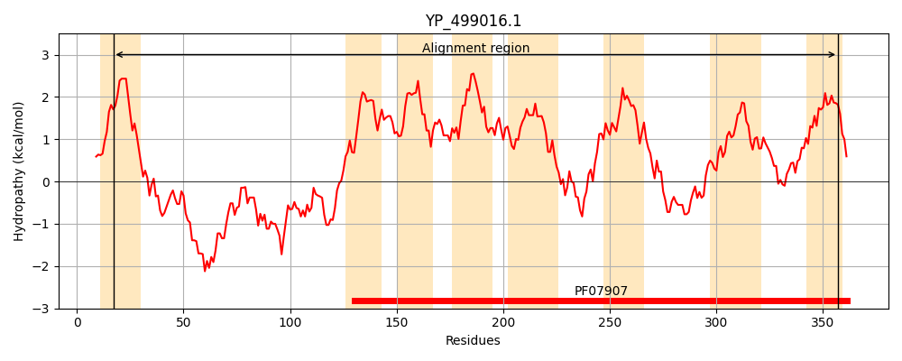
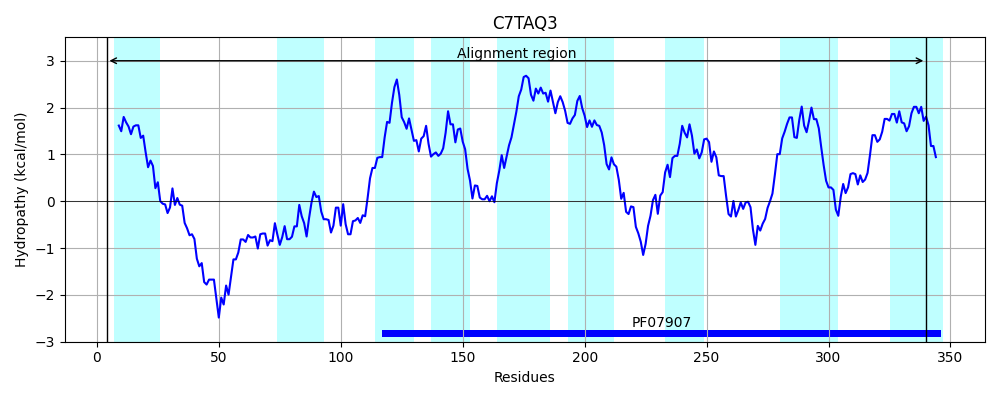
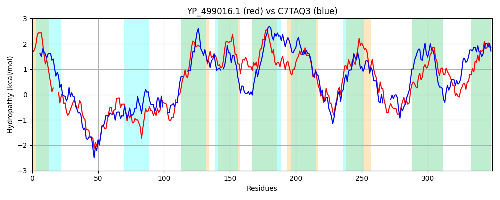

Hit Accession: C7TAQ3
Hit TCID: 9.B.141.1.3
Hit Description: gnl|BL_ORD_ID|2695 gnl|TC-DB|C7TAQ3|9.B.141.1.3 Uncharacterized protein OS=Lactobacillus rhamnosus (strain ATCC 53103 / GG) GN=LRHM_0777 PE=4 SV=1
Mach Len: 349
e:0.000000
Query TMS Count : 8
Hit TMS Count: 9
TMS-Overlap Score: 6.950000
Predicted Substrates:None
BLAST Alignment:
Score: 350 , Bit scores: 139 bits, E-value: 4.9e-38, Alignment length: 349, Percentage identity: 27
Query: 17 LGLFCIAFIGAILFTFN---NENFYNKPIGQIIDVKHVSSTPTKDAQNNRDIKYKNQLKVKILNGQFAGETTTINHQYVKSQADSEAFRTHEKVLLHISNKPSDAYIIEK-KRDTLTVIITGLFLLTV----LLVGRKVGLQSILSLILNSIAILIAIYIHIQHSNINLFLLMTIAMICSTILTLLLVTGWHMRTLITIASTIIGTFLSIGLTELIIYMTDGKGIKYETMNFLSLPPKDIFLASVLIGSLGAIMDVAITIASGMHEILQRTPHISMRRWALAGRNIGQDIMGTMTNILLFSYLSGALPMFLIFLKNANTVTYTISMNWSLEIARALTGGIGIVLTIPIT 357
+G + + FI AI + Y KPIG++ VK V + +D N D K Q++V++LN G T+++ Y+ S R E+V L ++ Y + KRD I+ GL +LT L++GR+ L SI S++LN++ A+ I + L + T+LT + + G+ + +++ T L++ L I+ MT+ G+ +E + + + P+ +F A V+IGSLGA++D A I+ + ++ H + + AG IG+++MG + ++L +++ +++++N N++ T+ L A++L GIVL +P+T
Sbjct: 4 IGKWLLPFIAAIAVFIGMQFDSGLYTKPIGRVEAVKVVKTESHQDEDQNHDRLVKQQVQVRLLNTANRGRRVTMHNTYLFSGGLDNQLRVGEQVFLDVNK---GTYTLNNVKRDA---ILAGLLVLTFGLIFLVMGRRAWLTSI-SILLNTLIFFAAVEWEIGSKQWQAWWLFVGLAVVFTVLTAVFIVGFKAIAVAISLGSLVATGLAVALGYGIMAMTNYNGVHFEEVKYATQTPQLLFFAQVVIGSLGAVLDEASDISVAIFQL-----HETAKERFRAGMAIGRNVMGPLISVLFMIFIADTFMESVLWIRNNNSIAQTVIWVMGLGFAQSLISAFGIVLAVPVT 340 | Protein Hydropathy Plots: |
|---|
|  |  |
Pairwise Alignment-Hydropathy Plot:
|
|---|
|  |